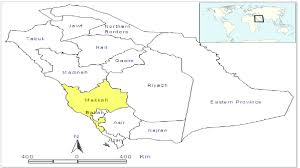

Eastern Province, also known as the Eastern Region, and officially the Emirate of the Eastern Province, is the easternmost of the 13 provinces of Saudi Arabia. It is the largest province by area and the third most populous after the Riyadh Province and the Makkah Province. In 2017, the population was 4,900,325. Of these, 3,140,362 were Saudi citizens and 1,759,963 were foreign nationals The province accounts for 15.05% of the entire population of Saudi Arabia and is named for its geographical location relative to the rest of the kingdom.